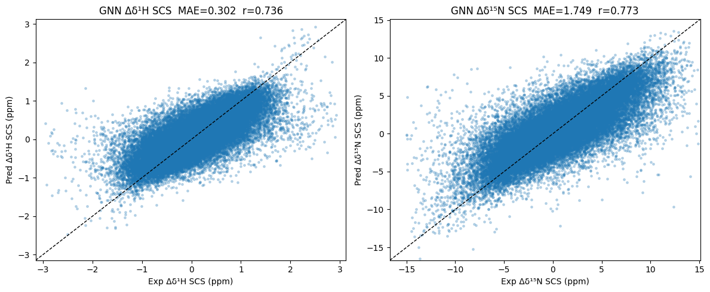

Case study 02案例 02
Designing a structure-aware model for protein NMR prediction为蛋白质 NMR 预测设计结构感知模型
I designed a trainable chemical-shift prediction framework, used molecular context to shape its inputs, and evaluated a graph model against a non-graph baseline. The case shows how scientific representation and evaluation choices shaped the research.
我设计可训练的化学位移预测框架，用分子环境知识指导输入表示，并将图模型与非图基线比较。本案例展示科学表示与评价选择如何影响研究。
- Scientific question科学问题
- Structure → amide chemical shifts结构 → 酰胺化学位移
- My role我的职责
- Framework design and model training框架设计与模型训练
- Evidence证据
- Recorded v11 evaluation已记录的 v11 评价
Predict an experimental observable预测可与实验比较的观测量
The project asks how a protein structure can be connected to its measured NMR chemical shifts. These shifts provide a residue-level observable for comparing molecular models with experiment. My task was to design a framework that learns that relationship from paired structural and experimental records.
项目关注如何把蛋白质结构连接到实测 NMR 化学位移。化学位移提供残基层面的观测量，可用于比较分子模型与实验。我的任务是设计一个框架，从配对的结构和实验记录中学习这种关系。
I needed to decide what information the model should receive and what kind of evidence would make its predictions useful. A working training loop alone would not answer either question.
我需要决定模型应接收哪些信息，以及什么样的证据能够说明预测有用。仅仅让训练流程运转起来，尚不足以回答这两个问题。
Make the representation reflect the molecular problem让输入表示反映分子问题
My starting point was the scientific meaning of a chemical shift. A residue is embedded in a local molecular environment, and a model based only on its identity would leave much of that context implicit. I therefore designed the framework around structural information as well as residue chemistry.
我的出发点是化学位移的科学含义。一个残基处于具体的分子环境中，仅有残基身份难以充分表达这种环境。因此，我让框架同时利用结构信息和残基化学特征。
The documented implementation encodes geometric features, solvent accessibility, hydrogen-bond descriptors and other local context. It represents residues as nodes and their sequence and spatial relationships as edges. This creates an explicit route for the model to combine information from neighboring parts of the structure.
已记录的实现编码几何特征、溶剂可及性、氢键描述符等局部信息，以残基为节点，以序列和空间关系为边。这为模型整合结构中相邻部分的信息提供了明确途径。
I used a graph neural network to test that representation. The important research choice was to expose relationships that a per-residue predictor would otherwise have to infer indirectly. Attention-based message passing was a modeling mechanism for that purpose; attention weights themselves were not treated as proof of a physical interaction mechanism.
我采用图神经网络检验这一表示。关键的研究选择是显式提供残基间关系，让模型能够利用单残基预测器需要间接推断的信息。基于注意力的消息传递是实现这一目标的建模手段；注意力权重本身并不构成物理相互作用机制的证明。
The targets were secondary chemical shifts: observed shifts relative to a random-coil reference. This makes the prediction task and its units explicit. Separate hydrogen and nitrogen outputs also made it possible to see whether one observable was improving while the other remained poorly modeled.
目标为次级化学位移，即观测值相对于无规卷曲参考值的差异。这明确了预测对象和单位。分别输出氢与氮的位移，也便于判断是否出现一类观测量改善、另一类仍拟合较差的情况。
The data representation also needed to remain aligned with the labels. The notebook contains BMRB–PDB residue-offset matching, quality filters and training-target normalization. These choices matter because a model can learn a consistent numerical pattern even when the structural record and experimental residue have been paired incorrectly.
数据表示还必须与标签正确对应。Notebook 包含 BMRB–PDB 残基编号偏移匹配、质量过滤及训练标签归一化。这些选择很重要：即使结构记录与实验残基配对错误，模型也可能学到某种稳定的数值模式。
Figure 1. Connect molecular context to a testable model图一：把分子环境转化为可评价的模型
- Data pairing数据配对Match BMRB shifts with PDB structures.配对 BMRB 化学位移与 PDB 结构。
- Representation输入表示Encode residue chemistry and spatial relationships.编码残基化学特征与空间关系。
- Comparison对照设计Compare a GNN with a shared-feature MLP.比较 GNN 与使用同类节点特征的 MLP。
- Evaluation评价Report both nuclei in physical units.以物理单位分别评价两类原子核。
Build a comparison that answers the research question设计能够回答研究问题的对照
I designed the framework and trained models from scratch. To interpret the graph model, the pipeline also trains an MLP baseline. Both use residue-level input features, but the MLP does not perform graph message passing. This is a more informative comparison than reporting the GNN score alone.
我负责框架设计，并从零开始训练模型。为了评价图模型，流程也训练了 MLP 基线。两者都使用残基层面的输入特征，而 MLP 不进行图消息传递。这比单独展示 GNN 分数更有信息量。
The comparison should be described precisely. The MLP is not a sequence-only model: its node inputs already include structural features. The result compares two modeling approaches within this pipeline. It does not isolate the causal contribution of every physical descriptor, because that would require controlled feature ablations.
这一对照需要准确描述：MLP 并非纯序列模型，其节点输入已包含结构特征。结果比较的是本流程中的两种建模方法；若要确定每类物理描述符的独立贡献，还需要受控的特征消融。
The evaluation reports mean absolute error in ppm and Pearson correlation for each nucleus. These answer different questions: error measures the size of the discrepancy, while correlation describes agreement in variation. Neither should be renamed an accuracy percentage. I use the recorded test outputs with their split context rather than combining attractive numbers from different versions.
评价分别报告两类原子核的平均绝对误差（ppm）与 Pearson 相关系数。误差衡量偏差大小，相关系数描述变化的一致性，两者都不应改称“准确率”。本案例使用带有划分背景的已记录测试输出，不拼接不同版本中更好看的数字。
This leaves clear priorities for further validation: inspect performance across proteins, separate related sequences across splits, and compare against external predictors on the same examples. Those are requirements for stronger generalization claims, not completed benchmarks claimed by this case.
进一步验证的优先项因此很清楚：检查不同蛋白的表现、在划分之间隔离相近序列，并在相同样本上与外部预测器比较。这些是支持更强泛化结论的后续要求，本案例不把它们描述为已经完成的基准测试。
Report the recorded result in its actual scope按实际范围报告已有结果
The saved v11 evaluation shows lower pooled residue-level error for the GNN than for the MLP in both nuclei. The scatter also shows residual spread and compression toward the center, so the model remains an imperfect predictor. The notebook’s own target checks did not pass every threshold.
v11 已保存的评价显示，GNN 在两类原子核上的汇总残基误差均低于 MLP。散点图仍存在明显离散和向中心收缩的现象，模型尚不完善。Notebook 自身设置的目标检查也未全部通过。
These results support continued investigation of the framework. They do not establish experimentally validated binding, structure correctness, clinical utility or equivalence to another published predictor. The model predicts an observable; the scientific interpretation still requires appropriate experiments and comparisons.
这些结果支持继续研究这一框架，并不建立结合、结构正确性、临床用途或与其他已发表预测器等效的实验证据。模型预测的是观测量，科学解释仍需要适当的实验与对照。
Figure 2. Recorded held-out predictions图二：已记录的留出集预测
Saved v11 notebook outputv11 notebook 已保存输出
| Model | ¹H MAE | ¹⁵N MAE | r (¹H) | r (¹⁵N) |
|---|---|---|---|---|
| GNN | 0.3020 | 1.7486 | 0.7358 | 0.7734 |
| MLP | 0.4061 | 2.2681 | 0.4899 | 0.6076 |
Evaluation context and source评价背景与来源
The saved split contains 4,286 training, 1,225 validation and 612 test BMRB entries. Splitting is randomized by entry ID, with seed 42. Means and standard deviations are calculated from training targets. Metrics are pooled over collected residue predictions, rather than averaging an equal-weight score for each protein. The code does not establish a sequence-family-disjoint split.
保存的划分包含 4,286 个训练、1,225 个验证及 612 个测试 BMRB 条目。代码按条目 ID 随机划分，种子为 42；均值和标准差从训练标签计算。指标汇总收集到的残基预测，并非对每个蛋白等权计算分数后取平均。代码没有建立按序列家族隔离的划分。

Individual contribution个人贡献
My contribution我的贡献
Designed the framework, trained models from scratch and brought protein/NMR knowledge to the representation and interpretation. The public notebook provides implementation and recorded evaluation evidence.
设计框架、从零开始训练模型，并将蛋白质与 NMR 知识用于表示和解释。公开 notebook 提供实现及已记录评价的证据。
Scope and collaboration范围与协作
This is a computational research project. This case reviews the recorded artifacts; it does not claim a new independent training reproduction or production deployment.
这是计算研究项目。本案例核对已有记录，不声称完成新的独立训练复现或生产部署。
Sources and technical evidence来源与技术证据
Pinned v11 notebook: model, split and saved evaluation. Recorded metrics and provenance.
固定版本的 v11 notebook：模型、划分与已保存评价。指标与来源记录。